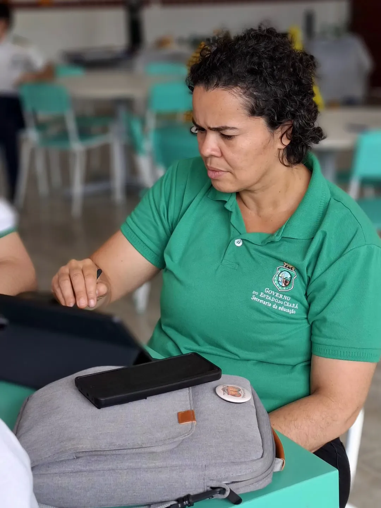

PRODUÇÃO CULTURAL ESTUDANTIL
Tia Simoa foi uma mulher negra liberta que se destacou como liderança popular no Ceará do século XIX.
Associada às mobilizações abolicionistas e à histórica Greve dos Jangadeiros (1881), seu nome simboliza a força das mulheres negras na luta contra a escravidão e contra o apagamento da memória afro-cearense.
"Enquanto muitos foram esquecidos pela história oficial, ela permaneceu na memória do povo."
O Laboratório de História é um espaço vivo de formação, pesquisa e criação pedagógica, dedicado à construção de um conhecimento histórico emancipador, crítico e humanizado. Mais do que uma sala de aula ou um acervo de materiais, o laboratório se consolida como uma oficina em permanente movimento, onde o estudante assume o papel de protagonista e pesquisador do seu próprio tempo e território. Compromissado com a educação antirracista e com a valorização do patrimônio cultural e imaterial, o projeto busca descolonizar currículos, recontar narrativas historicamente silenciadas e promover um ensino de História dinâmico, afetuoso e pautado na diversidade.
Funciona como a raiz do projeto, reconhecendo e honrando a relevância dos saberes e narrativas dos povos africanos, afro-brasileiros e originários na formação social, compreendendo que o passado orienta as ações do presente.
Reafirma que o saber é um bem comunitário, integrando estudantes, educadores e a comunidade local para somar olhares e fortalecer os laços sociais.
Conecta a teoria rigorosa às emoções e à sensibilidade humana, aproximando os pesquisadores da humanidade das histórias estudadas.
Inspirado na filosofia africana do "Eu sou porque nós somos", estabelece a interdependência e a empatia no processo educativo, mostrando que a construção do conhecimento histórico só ganha sentido pleno na relação respeitosa com o outro.
Guia o trabalho prático por meio do suporte mútuo nas investigações, da partilha de ferramentas e da colaboração em projetos democráticos.
Funciona como a ponte entre a investigação científica e o encantamento do aprender, utilizando jogos, oficinas e metodologias ativas para tornar o ensino interativo, acessível e prazeroso.
Atua como a matéria-prima do fazer histórico, sendo constantemente resgatada por meio de depoimentos, fontes primárias e histórias orais da comunidade para combater o esquecimento e garantir o direito à identidade.
Garante um espaço seguro, escuta atenta e respeito às diferentes trajetórias de vida, assegurando que o aprendizado ocorra com dignidade e inclusão.

Coordenadora GeralStelina Moreira de Vasconcelos Neta é doutora em Ensino, Filosofia e História das Ciências (UFBA/UEFS), mestra em Educação e Contemporaneidade (UNEB), graduada em Pedagogia e História, com especializações em Currículo, Cultura Africana e Metodologias Ativas.
Mulher negra e ativista lésbica vinculada à Rede LesBi, possui sólida trajetória que une o rigor acadêmico à defesa dos Direitos Humanos. Atuou no Centro de Direitos Humanos de Feira de Santana e possui ampla experiência na formação de docentes, tendo lecionado no IFBA e no PARFOR/UNEB.
Pesquisadora nas áreas de educação, relações étnico-raciais, gênero, sexualidades e interseccionalidades, integra diversos núcleos de pesquisa de relevância nacional, como o NuCus (UFBA) e o GT de Gênero da ANPUH.
"A história é um organismo vivo que respira através da tecnologia."


Fragmentos de memória preservados através do tempo e da tecnologia
Marque sua visita, participe de workshops ou agende uma reunião com nossa equipe.
Espaço seguro para registro de casos de racismo, LGBTfobia, abuso de autoridade e violações de direitos.